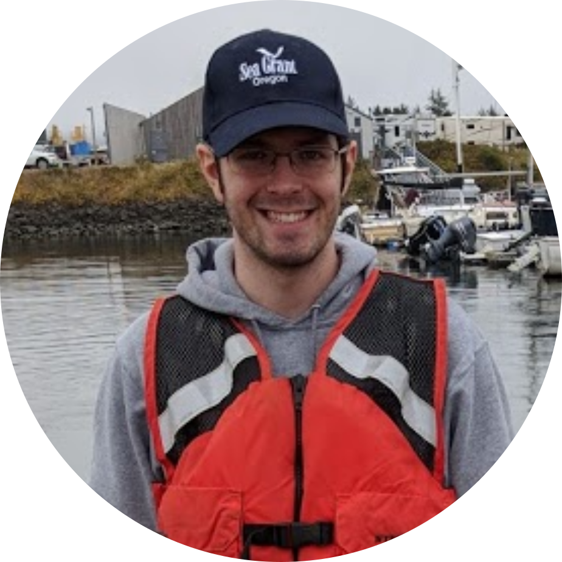
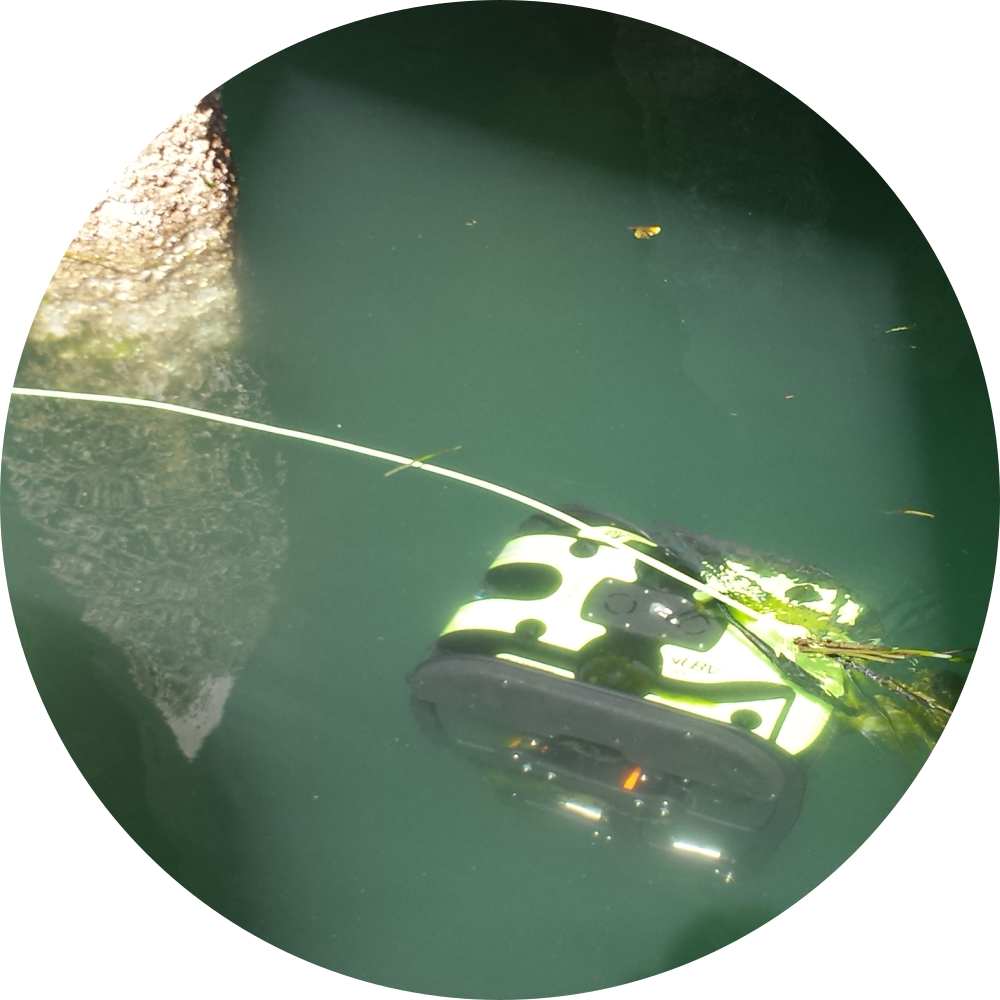
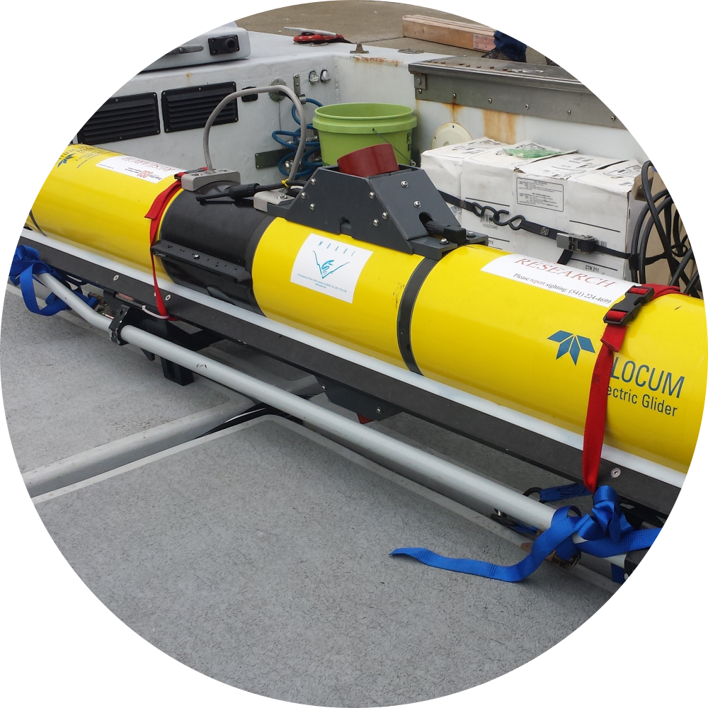
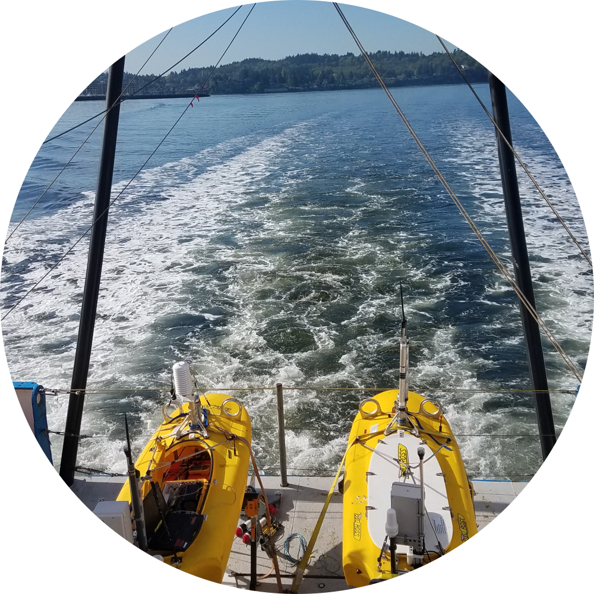

LinkedIn • ResearchGate
About Me
I am a fifth year PhD Candidate at the Collaborative Robotics and Intelligent Systems (CoRIS) Institute at Oregon State University. I work in the Robot Decision Making Lab, advised by Dr. Geoffrey A. Hollinger. My main research interests are using topological techniques and representations to enable robots to reason globally about the environments they operate within. I work on developing these techniques for field robotics applications and deploying them on hardware, particularly in the marine domain.
I completed my B.S. in Computer Science with an emphasis in AI and Machine Learning at Northwestern Universiy. I worked as an undergraduate research assistant building planning and localization modules for a smart wheelchair with Dr. Brenna Argall in the ARGALLAB. Additionally, I worked as a summmer research intern with Dr. Pietro Valdastri in the STORM Lab at Vanderbilt University, localizing capsule robots within a human colon.
Research Projects
|
Planning Non-Entangling Paths for Tethered Vehicles I developed an algorithm that plans non-entangling Travelling Salesperson tours for a tethered vehicle that allow it to complete inspection missions without its tether becoming entangled. |
 |
|
Bioacoustic Hotspot Monitoring with Slocum Glider I developed an algorithm that identifies hotspots in an information field and then plans a maximally informative schedule for a robot to approach information gathering with a divide-and-conquer strategy. |
 |
|
Heterogeneous Multirobot Salinity Front Tracking I developed a system to coordinate a team of heterogeneous surface and subsea assets to identify and track salinity fronts over long periods of time in a dynamic ocean environment. We deployed the system for two-weeks of continuous operations in the Gulf of Mexico in Summer 2019. |
 |
Publications
Journal Articles
S. McCammon, G. Marcon dos Santos, M. Frantz, T. P. Welch, G. Best, R. K. Shearman, J. Nash, J. Barth, J. Adams, and G. Hollinger, "Ocean Front Detection and Tracking using a Team of Heterogeneous Marine Vehicles, under review in Journal of Field Robotics, submitted Dec 2019.
N. Lawrance, R. DeBortoli, D. Jones, S. McCammon, L. Milliken, A. Nicolai, T. Somers and G. Hollinger, "Shared autonomy for low-cost underwater vehicles," Journal of Field Robotics, vol. 36, no. 3, pp. 495-516, May 2019.
K. Benoit-Bird, T. Welch, C. Waluk, I. Wangen, P. McGill, C. Okuda, G. Hollinger, M. Sato, S. McCammon. "Equipping an underwater glider with a new echosounder to explore ocean ecosystems," Limnology and Oceanography: Methods, vol. 16, no. 11, pp.734-749, Nov. 2018.
Refereed Conference Papers
S. McCammon, D. Jones, and G. Hollinger, "Topology-Aware Self-Organizing Maps for Robotic Information Gathering," in Proc. IEEE/RSJ Int. Conf. on Intelligent Robots and Systems, Las Vegas, NV, Sept. 2020. To appear.
S. McCammon, T. Welch, C. Waluk, K. Benoit-Bird, J. Barth, and G. Hollinger, "Onboard autonomy system for the Slocum glider," in Proc. IEEE/MTS OCEANS Conference, Seattle, WA, Oct. 2019.
S. McCammon and G. Hollinger. "Topological hotspot identification for informative path planning with a marine robot," in Proc. IEEE International Conference on Robotics and Automation (ICRA), Brisbane, May 2018.
S. McCammon and G. Hollinger. "Planning and executing optimal non-entangling paths for tethered underwater vehicles," In proc. IEEE International Conference on Robotics and Automation (ICRA), Singapore, May 2017. Finalist: Best Automation Paper
N. Lawrance, T. Somers, D. Jones, S. McCammon, and G. Hollinger. "Ocean deployment and testing of a semi-autonomous underwater vehicle." in Proc. MTS/IEEE OCEANS Conference, Monterey, CA, Sept 2016.
Refereed Workshop Papers
S. McCammon and G. Hollinger, “Planning non-entangling paths for tethered underwater robots using simulated annealing,” in Proc. Robotics: Science and Systems Conf. Workshop on Robot Learning and Planning (RSS16), Ann Arbor, MI, June, 2016.
N. Lawrance, T. Somers, D. Jones, S. McCammon and G. Hollinger, "Ocean deployment and testing of a semi-autonomous underwater vehicle," in Proc. IEEE International Conference on Robotics and Automation Workshop on Marine Robot Localization and Navigation (ICRA), Stockholm, Sweden, May 2016.
Education
Oregon State University
Corvallis, OR
PhD in Robotics
Expected Nov 2020
Topologically-Guided Robotic Information Gathering
Advisor: Dr. Geoffrey A. Hollinger
Northwestern University
Evanston, IL
B.S. in Computer Science
2015
Minor in Classical Studies
Refereed Workshop Papers
S. McCammon and G. Hollinger, “Planning non-entangling paths for tethered underwater robots using simulated annealing,” in Proc. Robotics: Science and Systems Conf. Workshop on Robot Learning and Planning (RSS16), Ann Arbor, MI, June, 2016.
N. Lawrance, T. Somers, D. Jones, S. McCammon and G. Hollinger, "Ocean deployment and testing of a semi-autonomous underwater vehicle," in Proc. IEEE International Conference on Robotics and Automation Workshop on Marine Robot Localization and Navigation (ICRA), Stockholm, Sweden, May 2016.
Education
Oregon State University
Corvallis, OR
PhD in Robotics
Expected Nov 2020
Topologically-Guided Robotic Information Gathering
Advisor: Dr. Geoffrey A. Hollinger
Northwestern University
Evanston, IL
B.S. in Computer Science
2015
Minor in Classical Studies
Education
| Oregon State University | Corvallis, OR |
| PhD in Robotics | Expected Nov 2020 |
| Topologically-Guided Robotic Information Gathering | Advisor: Dr. Geoffrey A. Hollinger |
| Northwestern University | Evanston, IL |
| B.S. in Computer Science | 2015 |
| Minor in Classical Studies |